Мастерская индивидуального пошива · Санкт-Петербург
Сумка, которая рассказывает вашу историю.
Индивидуальный пошив аксессуаров из натуральной кожи. Одна модель — один владелец: вы выбираете всё, вплоть до цвета строчки.
- 0 суммок создано вручную
- 0 в пошиве кожи
- 0 ручной шов
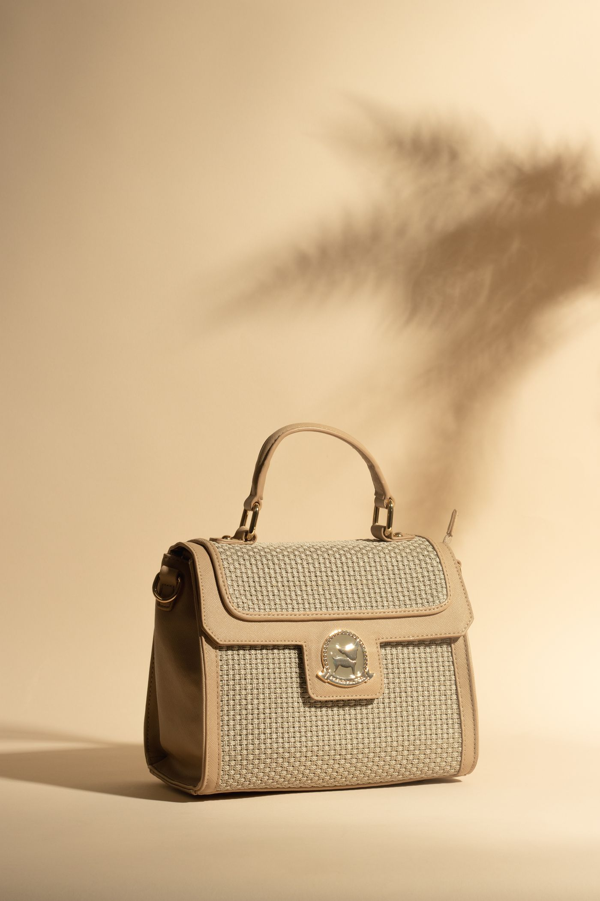
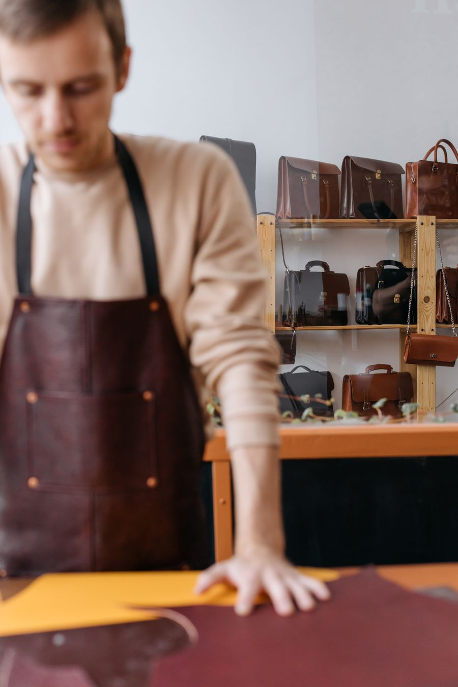
01 Знакомо?
Устала выбрасывать сумки через сезон
«Покупаешь вещь за приличные деньги, а через пару месяцев углы стираются, кожа трескается, а фурнитура облезает. Хочется уже не просто “очередную сумку”, а одну, но по-настоящему качественную вещь, которая прослужит годы».
-
Углы стираются Кромка теряет форму уже через пару месяцев носки.
-
Кожа трескается Дешёвое сырьё не выдерживает ежедневную нагрузку.
-
Фурнитура облезает Покрытие сходит, замок начинает заедать и цеплять ткань.
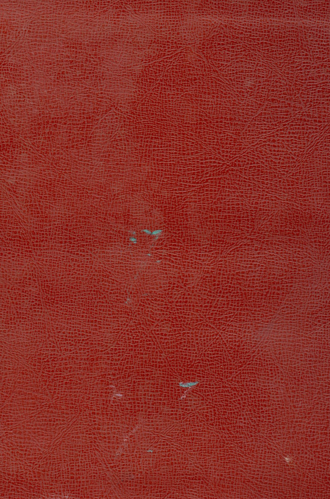
02 Наш подход
100% эксклюзивность.
Ваша сумка будет только вашей.
Мы не шьём тиражи. В нашей мастерской вы становитесь соавтором своего аксессуара: выбираете модель, оттенок, фактуру кожи и даже цвет строчки. Мы создаём вещь, которая станет продолжением вашей индивидуальности, а не копией с витрины масс-маркета. Вы гарантированно не встретите её ни на одной другой девушке.
Соберите свою сумку
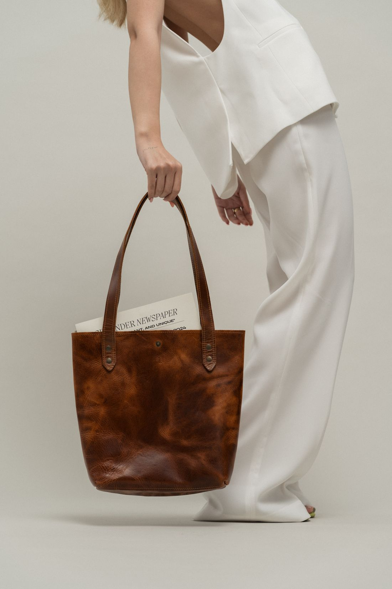
-
01
Единственный экземпляр
Лекала остаются у нас: повтор вашей модели не закажет никто.
-
02
Вы выбираете всё
Кожа, подкладка, фурнитура, цвет и шаг строчки — 40+ комбинаций.
-
03
Клеймо с инициалами
Персональное горячее тиснение — ваша подпись на изделии.
-
04
Уход и реставрация
Возвращайте сумку на чистку и восстановление в любое время.
03 Качество в деталях
Почему наши сумки служат годами
Смотрим на то, что обычно скрыто от глаз: срез кожи, шов и фурнитуру. Именно здесь вещь из масс-маркета сдаётся, а вещь из мастерской — живёт.
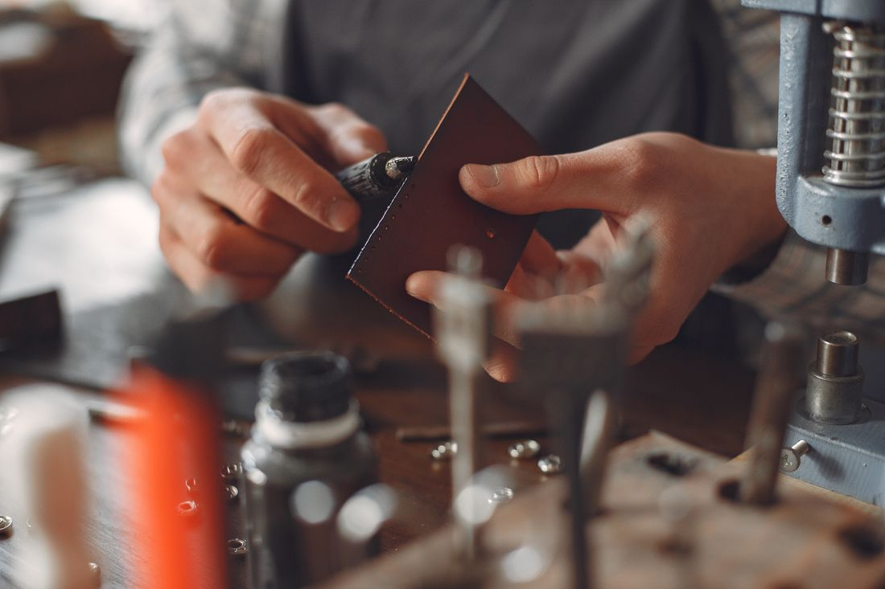
Срез кожиКожа растительного дубления 1,4–1,6 мм
Берём плотные чепрачные участки: они не тянутся, не рвутся по кромке и держат форму годами. Кромку обрабатываем вручную в шесть этапов — она запечатана, а не «закрашена».
- Плотность1,4–1,6 мм
- Кромкаручная запечатка
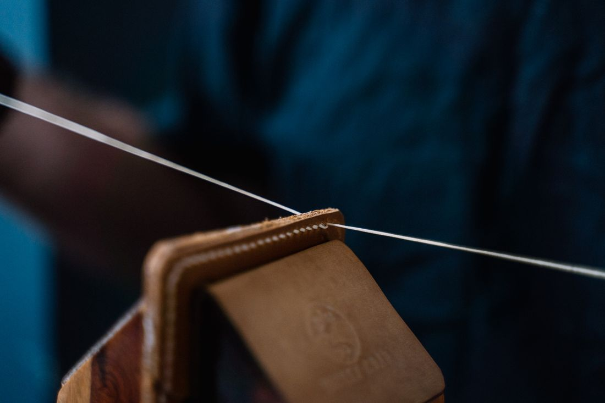
Ручной шовСедловой шов вощёной нитью 0,6 мм
Каждый стежок прошиваем вручную двумя иглами. Такой шов не расходится при обрыве нити и стягивает детали плотнее любой машины.
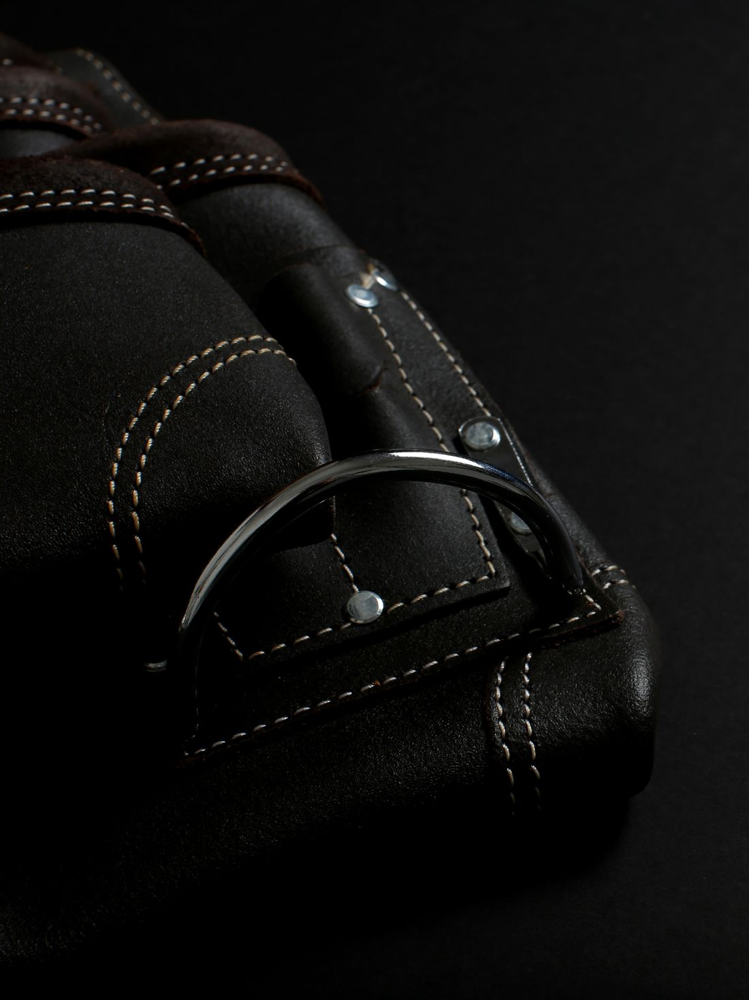
ФурнитураЛатунь и никель с износостойким покрытием
Никакого «золотого» напыления, которое сходит за месяц. Фурнитура не облезает, не оставляет следов и работает мягко.
04 Процесс
От идеи до вашей сумки
Пять спокойных шагов. Вы участвуете ровно настолько, насколько хотите: от полноценного соавторства до «доверяю вам».
-
01
Знакомство
Обсуждаем задачу, референсы и сценарии носки: куда с ней ходите и что кладёте.
-
02
Эскиз и лекала
Строим индивидуальный крой под ваши пропорции и удобную длину ремня.
-
03
Материалы
Выбираем кожу, подкладку, фурнитуру и цвет строчки. Присылаем фото образцов.
-
04
Пошив
2–4 недели ручной работы. Показываем этапы и согласовываем детали по ходу.
-
05
Финал
Клеймо с инициалами, карточка по уходу и упаковка, в которой приятно дарить.
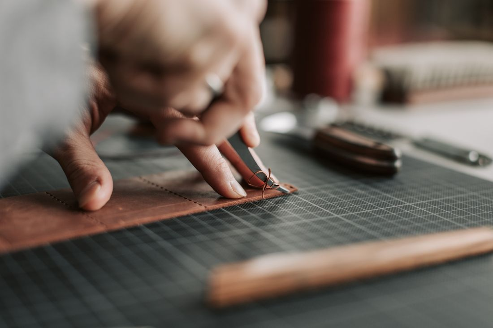
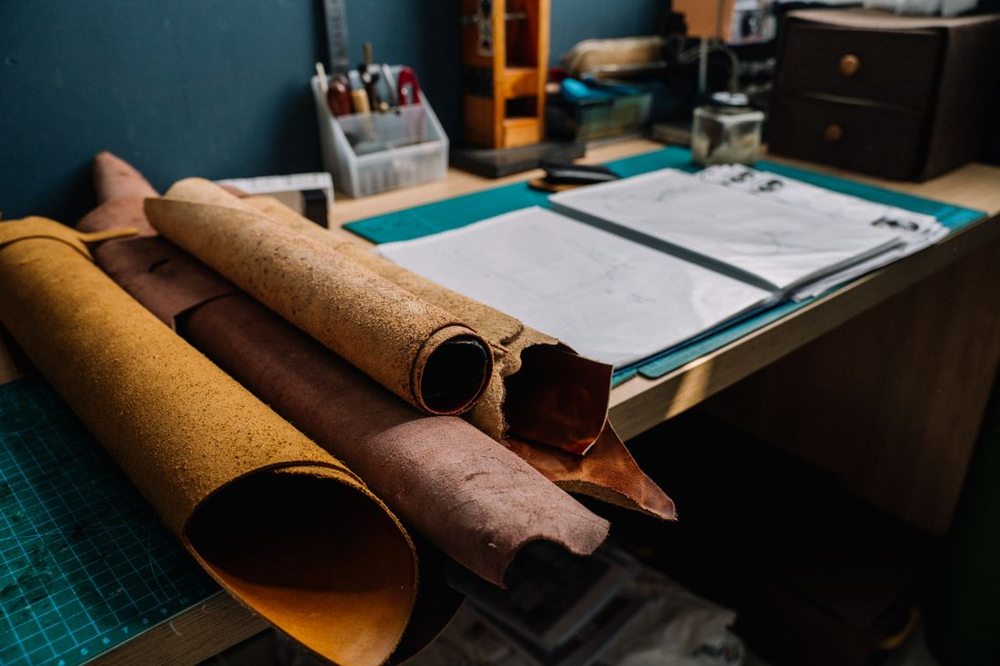
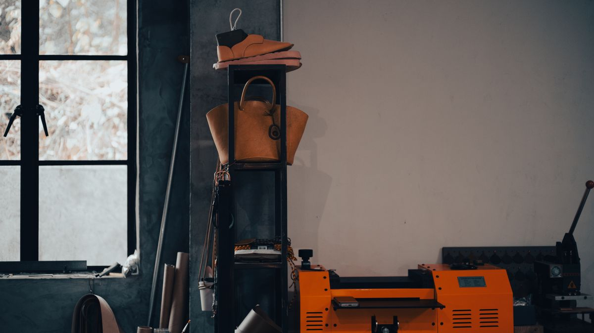
05 Работы
Сумки, которые уже живут у своих владельцев
06 Отзывы
Их уже не встретишь на других
«Носила сумку каждый день год — ни одного потёртого угла. И самое приятное: у подруг нет такой».
«Боялась, что индивидуальный пошив — это сложно. В итоге выбрала кожу и строчку в переписке за вечер, а через три недели забрала сумку».
«Заказывала подарок маме. Тиснение с инициалами получилось настолько аккуратным, что она не сразу поверила, что это ручная работа».
07 Запись
Давайте создадим сумку, которую больше никто не повторит
Оставьте контакты — обсудим модель, кожу и сроки. Консультация бесплатная и ни к чему не обязывает.
- Телефон+7 921 655-61-81
- Почтаhello@lila-leather.ru
- ШоурумСанкт-Петербург, ул. Мастеровая, 12
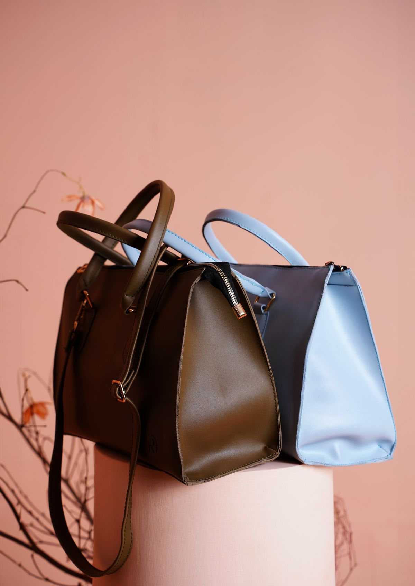